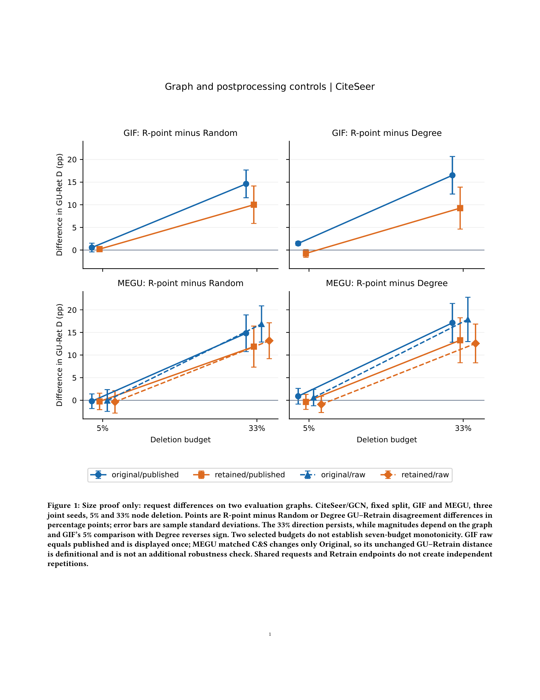
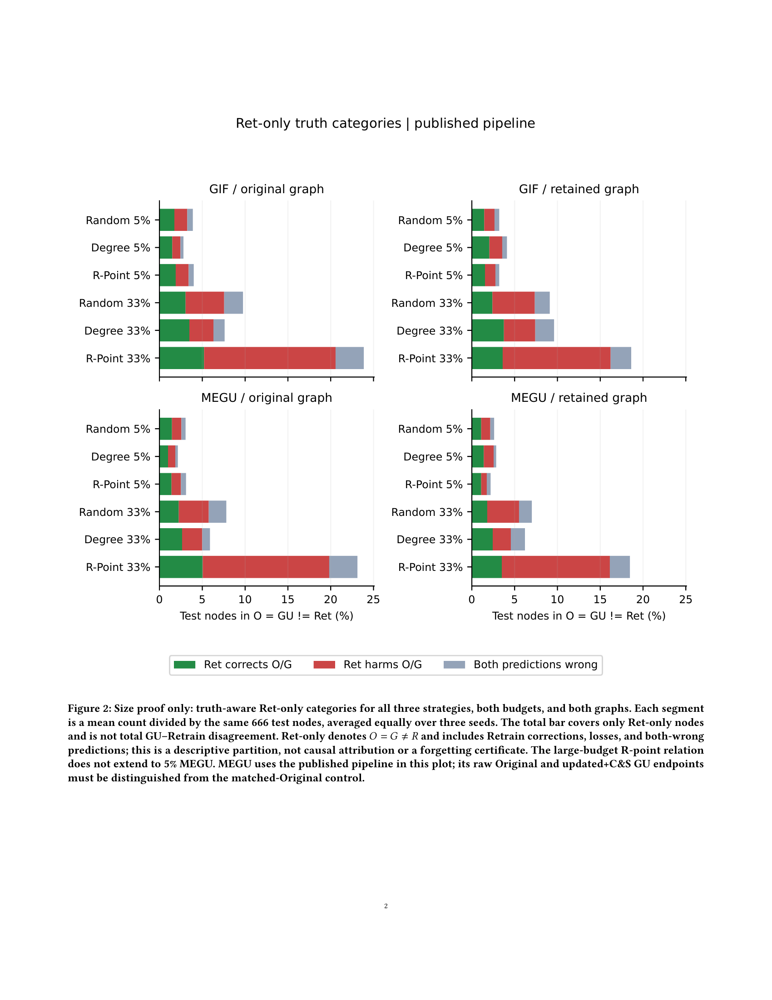
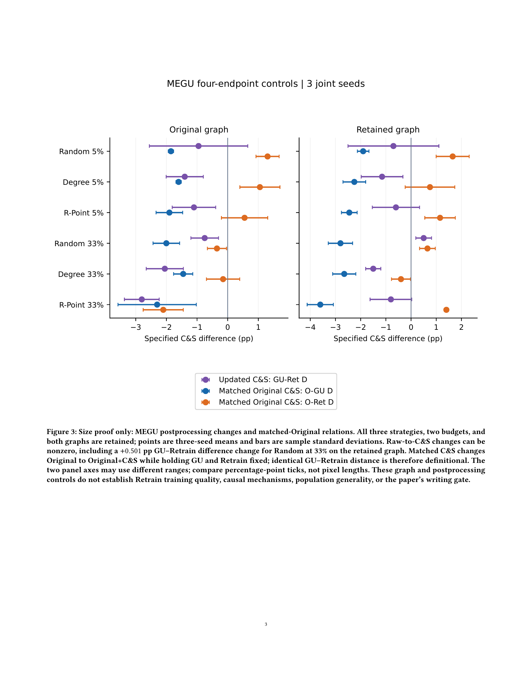

B完整两图／C&S：ACM实际通栏尺寸proof
2026-10-24（Asia/Shanghai）。这是独立图稿尺寸检查，只有三图和准确scope captions，没有英文科研正文；旧A／B第一层proof未覆盖或替换。
结论：原始三图缩到ACM通栏后，主要标签约6.4–6.7 PDF pt，不满足本次主要文字至少7.5pt的标准；失败样张已保留。仅在本隔离项目中重排的复制版，三页均实际编译并逐页查看，图内主要水平文字为8.5／9.5／10.5pt，无裁切、重叠或LaTeX溢出。原科学图稿及生成器没有修改；这不是整篇排版验收，也不放行写作。
1. 可查看的结果
2. 模板、尺寸与实际编译
通过create_latex_project新建b-full-controls独立项目，并在Codex打开；使用现有Overleaf相同acmart sigconf,anonymous,review与会议元信息，显式双栏。桌面编辑器编译返回success；TeX Live 2026的latexmk/pdfLaTeX亦真实编译成功，shell escape关闭，没有安装软件。
实测textwidth=506.295 TeX pt，约7.005604英寸；columnwidth=241.14749 TeX pt，textheight=626pt。三图均用figure*、width=textwidth，每页一图及scope caption。复制版画布按该物理宽度生成，不使用bbox紧裁后二次缩字。三页200dpi PNG均为1700×2200，并通过view_image实际查看；这不是纸张打印测试。
最终编译0错误、0overfull、0underfull、0未定义引用。样张缺CCS／keywords／ACM reference而有三类ACM提示；关闭shell escape还有epstopdf提示，这些不是投稿正文合规检查结果。
3. 字级与逐页判断
PDF pt为1/72英寸；TeX pt为1/72.27英寸。统计只取图内DejaVuSans水平字符，避免旋转轴标签bbox误判；约5.98pt的页码不算图内数据文字。
| 页／图 |
原图通栏水平字，PDF pt |
私有重排水平字，PDF pt |
实际查看判断 |
| 1／策略差／两图控制 |
6.74/8.087 |
8.5/9.5/10.5 |
原样缩印有小字风险；私有复制版无裁切、叠字，主要文字≥7.5pt。 |
| 2／Ret-only真值分类 |
6.426/7.711 |
8.5/9.5/10.5 |
原样缩印有小字风险；私有复制版无裁切、叠字，主要文字≥7.5pt。 |
| 3／MEGU四端点C&S |
6.426/7.711 |
8.5/9.5/10.5 |
原样缩印有小字风险；私有复制版无裁切、叠字，主要文字≥7.5pt。 |
第1页四面板及所有误差棒完整，5%与33%明确、低预算GIF反向仍可见，legend保留两图及raw／published；连线仅连接两个固定预算。第2页全部三策略×两预算×两图完整，绿色／红色／灰色条和666节点分母清楚；条总长是Ret-only子集，不能误当总D。第3页全部六请求条件及三类C&S对照完整；两面板x轴范围不同，按pp刻度而非像素长度比较，Random33%保留图+0.501 pp的反例没有省略。
重排高度分别6.55／6.4／5.5英寸，图较高。此检查证明这些复制版在该通栏宽度可读，未证明能以同尺寸同时放进8页主文。若缩图、拆面板或进入最终论文浮动体，必须对新尺寸重验。
4. 复制版改了什么、没有改什么
reflow_copies.py从已接受interpret_graph.py中抽取原figures函数，在本目录保存原函数和私有排版函数。只改固定画布、字号、标题的等义缩短、轴标签等义缩短、legend与边距，并取消紧裁；颜色、标记、数值、误差、所有条件、坐标数据和顺序均保持。没有调用原main，也没有重做科学分析或生成新的科学结论。
使用同一endpoints.csv和已验收request_contrast_summary／cs_summary，Ret-only百分比转换按原生成器原式计算。来源生成器、五个科学CSV、checks、KEY_FINDINGS、VALIDATION、两个汇总CSV及三图PDF／PNG共17文件前后SHA完全一致；没有修改b_diagnostics数据、原图生成器、原图文件、协议、canonical或Overleaf。私有复制图若要正式采用，需显式移交排版源及刷新相应清单，不能把这里的hash冒充原图hash。
scope captions保留了以下科学边界：三联合seed和共享端点不增加独立样本；33%方向保留而幅度图依赖、5%GIF可反向；matched_cs只改Original，D_GR不变是定义而非新稳健确认；Ret-only同时有纠错／损失／双方均错，不作因果分解；真实C&S不是恒零或总降低D。这些图不验证Ret训练质量，不恢复A核心，也不改变writing_gate。
5. 最终逐页样张



单栏、完整论文分页、灰度、真实纸张打印均未测。Ret质量与最终科学复审仍独立；本proof通过不自动达到Weak Accept。